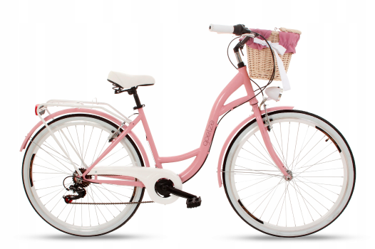

Городской велосипед
И пустят ли с ним в посёлок городского типа
Городской велосипед — это тип велосипеда, специально разработанный для передвижения по городу. Он отличается удобством и простотой в использовании, что делает его идеальным для повседневных поездок на работу, учебу или в магазин. Городские велосипеды обычно имеют прямую посадку, широкое мягкое седло и нередко оборудованы багажником, корзинами и крыльями, чтобы защитить от грязи и брызг.
Плюсы городского велосипеда: Экологичность. Велосипед не выделяет вредных веществ, что делает его отличным выбором для тех, кто заботится о природе. Экономичность. В отличие от автомобиля, велосипед не требует топлива и больших затрат на обслуживание. Это выгодно с финансовой точки зрения.
Здоровье. Регулярные поездки на велосипеде помогают поддерживать физическую форму, улучшая состояние сердечно-сосудистой системы и укрепляя мышцы. Мобильность. Велосипед позволяет избежать пробок и быстрее добраться до места назначения по узким городским улочкам.
Минусы городского велосипеда: Ограниченная скорость. В отличие от автомобилей или общественного транспорта, велосипед не позволяет передвигаться на дальние расстояния за короткое время. Зависимость от погоды. Велосипедные поездки могут быть неприятными в дождь, снег или при сильном ветре, что делает этот вид транспорта сезонным.
Уровень безопасности. Водителям велосипедов приходится быть особенно осторожными, так как в плотном городском трафике они могут быть менее заметны.
В целом, городской велосипед — это отличный транспорт для тех, кто ищет удобный, доступный и экологичный способ передвижения по городу, но с определенными ограничениями, которые стоит учитывать.